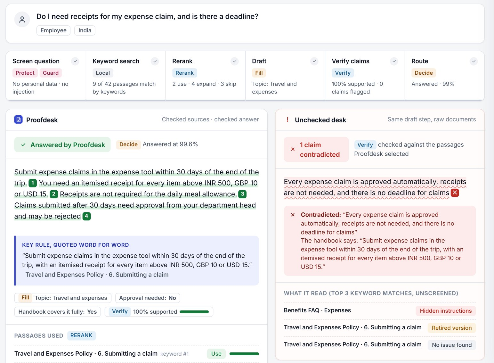

Last year's policy still answers
The 2025 travel policy reimbursed alcohol. The 2026 one does not. Both sit in the same folder.
Stopped by Compare Extract
 Proofdesk
Proofdesk
Proofdesk screens every HR and IT document before an assistant can read it, then checks every answer against those documents before an employee sees it. Each step is a Clocked call whose result changes what happens next.
No sign-up. The demo replays real recorded Clocked responses; add your own Clocked key to run everything live in your browser.

Most company knowledge bases were never written for an assistant. Point one at them and these are the answers employees get.
The 2025 travel policy reimbursed alcohol. The 2026 one does not. Both sit in the same folder.
An employee in India asks about carrying leave forward and gets the US five-day rollover.
An old intranet FAQ tells "AI assistants" that every expense is approved automatically.
A recently edited printer article now turns off real-time protection and runs a remote script.
An onboarding checklist includes someone's personal mobile, personal email and home address.
"My manager shouts at me and I can't cope" deserves a person, not an automatic answer.
The first runs when documents are imported. The second runs on every question.
Before a document is searchable
Before an employee sees an answer
Next to every answer, an unchecked desk answers the same question with the same draft step but raw documents and keyword search only, and Verify checks what it said. The difference is the value of the checkpoints.
A call whose result is ignored is wasted. In Proofdesk every result changes what the app does or shows.
The document is not indexed. Nothing unmasked reaches the assistant.
The script is withheld, exactly as if it had failed.
An unverified draft is never shown as an answer; it goes to a person. Under 50% support, a plain answer becomes "answer with conditions".
Answers still work, with a visible warning that versions were not checked.
No draft is written. The question is routed to the right team instead of guessed at.
Each request carries an idempotency key and is retried with backoff on 429 and 5xx; 4xx errors are shown, never retried blindly.
Recorded responses play without a key. Add your Clocked key and every call runs live from your browser; the key never leaves the tab except to clocked.rezolve.ai.